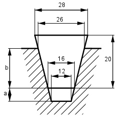

Aufgabe 203 Wie groß sind a und b und der in der Nut freibleibende Querschnitt A?

Das Passstück hat eine Trapezfläche: 28 mm + 16 mm AT = ---------------- * 20 mm = 440 mm² 2 Es setzt sich aus 2 Trapezen zusammen: 28 mm + 26 mm 440 mm² = --------------- * (20 – b) mm + 2 26 mm + 16 mm + --------------- * b mm 2 440 = 27 * (20 – b) + 21b 440 = 540 – 27b + 21b |+6b 440 + 6b = 540 | -440 6b = 100 | :6 b = 16,7 mm Der Nutquerschnitt ist ein Trapez und setzt sich aus 2 Trapezen zusammen: 26 + 12 26 + 16 16 + 12 ---------*(b + a) = ---------*b + ---------- * a 2 2 2 19 * (16,7 + a) = 21 * 16,7 + 14 * a 317,3 + 19 a = 350,7 + 14a | -14a 317,3 + 5a = 350,7 | -317,3 5a = 33,4 | :5 a = 6,7 mm Nutquerschnitt A: 12 mm + 16 mm A = --------------- * 6,7 mm = 93,8 mm² 2